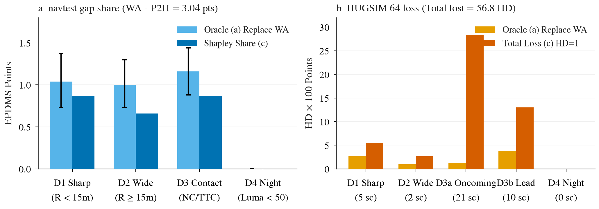
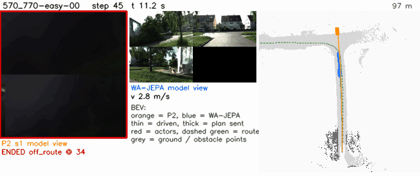
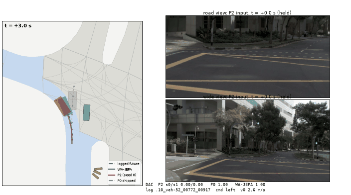
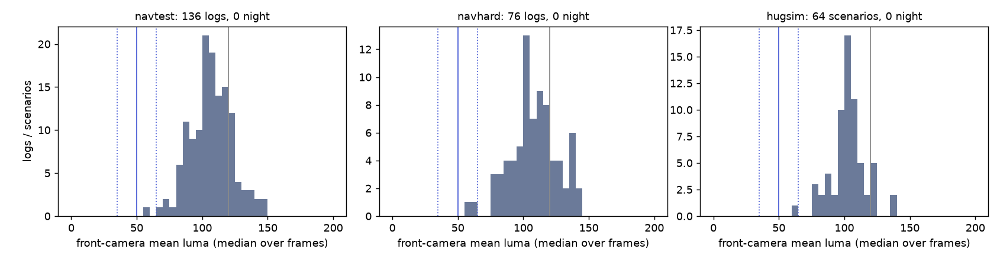
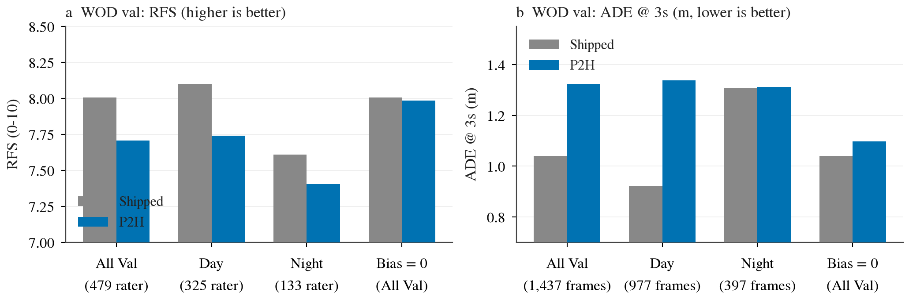

评测统一设定：HUGSIM 与 NAVSIM 归为同一档，共用统一模型基线 P2H（即 op_parity P2 基础加可行驶区域 SDF 足迹铰链损失 λ=10，checkpoint P2H10-F-s0/s1，详见决策 148）。HUGSIM 横向执行层固定为模型自身 plan 在 0.5 到 1.5 秒窗口内的平均曲率 spec_plan_smooth（决策 149）。对照参考为开源 SOTA 模型 WA-JEPA 与出厂模型（shipped，即 openpilot Cinque / P0）。
| 基准评测集 / 细分切片 | 出厂 shipped (P0) | P2（输入对齐微调） | P2H（基线 P2+hinge） | WA-JEPA (SOTA) | WA-JEPA − P2H 差距 [95% CI] |
|---|---|---|---|---|---|
| navtest（全部 12 146 token，W 帧） | 80.51 | 88.21 | 88.67 (88.58 / 88.77) | 91.71 | +3.04 [+2.32, +3.74] |
| navhard 综合（225 组，G 帧） | 33.54 | 30.34 | 31.84 (31.40 / 32.28) | 35.41 | +3.57 [−0.21, +7.57] |
| - navhard 阶段 1（开环日志） | 71.79 | 73.13 | 74.73 | 81.90 | +7.17 [+2.54, +12.27] |
| - navhard 阶段 2（偏移起点） | 47.08 | 42.44 | 43.04 | 43.53 | +0.49 [−0.86, +1.84] |
| HUGSIM 64 全部（HD × 100，两 seed 均值） | 39.4 (spec) / 39.8 (exam) | 42.5 (smooth) | 43.2 (43.12 / 43.17) | 45.1 (45.06) | +1.9 [−5.4, +9.8]（不显著） |
| - HUGSIM 转弯路线（turn23，23 场景） | 27.9 (spec) / 31.2 (exam) | 33.3 (smooth) | 35.0 (35.01) | 44.2 (44.17) | +9.2 [−2.1, +20.5] |
| - HUGSIM 直行路线（straight41，41 场景） | 45.9 (spec) / 44.6 (exam) | 48.2 (smooth) | 47.8 (47.75) | 45.6 (45.56) | −2.2（P2H 领先 2.2 分） |

用户观察到的直觉现象是「车转不过弯，冲出道路」。
在 HUGSIM 中，该现象完全真实存在，典型案例为 scene-570_770-easy-00（KITTI-360 丁字路口）：P2H 以 12–13 m/s 的高速直冲路口，模型规划的 plan 一直保持笔直，直到距路沿仅剩 1 秒时才急剧打方向，导致车辆以近 10 m/s 冲上对角路沿；exam 预设直接跟踪相同迟钝的 plan 也同样撞上路沿；而 WA-JEPA 在弯前 26 米处就主动将车速减缓至 2.7 m/s，平顺转过路口。[查看完整闭环 GIF: 570_770-easy-00.gif]。
然而在真实日志开环评测 navtest 上，失败形式截然相反：车辆不是「转不过去」，而是切内角出界。[查看 navtest 切内角典型 GIF: dac-45935e.gif]。


| 基准评测集 | 该桶失败样本定义与发生率 | (a) 替换为 WA-JEPA 得分 [95% CI] | (b) 替换为真值/参考轨迹 | (c) Shapley 差距份额 [95% CI] | WA-JEPA 在该桶同一单元失败率 |
|---|---|---|---|---|---|
| navtest | 日志未来曲率半径 R < 15 m 且 DAC < 1：P2H 10.4%（172/1653 token）vs WA 3.3%（54/1653） | 1.04 [0.73, 1.37] | 1.28 [0.92, 1.66] | 0.87 [0.53, 1.22]（DAC 占 0.83） | 17% [11, 25]%（P2H 高度特异） |
| navhard（综合） | PDM 参考路径 R < 15 m 且 DAC < 1：P2H 36%（662/1819）vs WA 31%（565/1819） | 3.46 [2.04, 5.06] | 7.48 [5.24, 9.93] | 阶段 1: 0.81 / 阶段 2: 0.97 [0.32, 1.56] | 74% [69, 79]%（两模型高度共享） |
| HUGSIM 64 | 背景碰撞（bg）或偏离路线（off_route）且路线 R < 15 m：共 5 个场景（全部位于 turn23） | 2.7 [0.2, 6.2] HD 分 | 1.3 [0.0, 3.5] | 5.5 [1.2, 10.6] HD 分 | 2 / 5 场景失败 |
turn_train.md）在 > 20° 弯道上对 WA-JEPA 差距闭合仅 0.01–0.02（CI 均包含 0）；在 > 45° 弯道上得分虽微涨 +0.97，但 DAC 失败率未变（−0.03 pp [−0.86, +0.91]），反而在直道与缓弯上付出代价值（缓弯 −0.75 分，全量 DAC 失败增加 +0.29 到 +0.36 pp）。
修复措施：（1）Replay hinge（在跟踪器回放足迹上施加可行驶区域铰链损失，并在转弯前角引入 0.5 m 余量，见预登记 plans/2026-10-07-replay-hinge-prereg.md），预期收回 navtest +0.2 到 +0.35 分；（2）自车历史匀速探针（Ego-history probe），在 navtest 上将弯前自车历史替换为匀速历史，检验 P2H 减速是否依赖历史而非视觉；（3）表征提升，解冻 encoder 并引入稠密可行驶 SDF 辅助头，根本解决 58% 表征缺陷。
决定性实验成本：Replay hinge 离线薄解码器门禁（需降低转弯 DAC 失败 ≥ 0.4 pp）约 1 小时 CPU；通过后 pilot 训练约 10–20 分钟 GPU；自车历史探针约 15 分钟 GPU 推理。
宽弯与缓弯（曲率半径 R ≥ 15 m）的失败绝大多数发生在 navtest 开环上，表现为车身边缘以极浅的深度越过可行驶区域边界（图六）。在 HUGSIM 闭环中，该类场景仅有 2 例（例如 scene-090-hard-01），且全为晚打方向擦碰道路外侧，车辆入弯速度正常（3.7 m/s），转向响应较路线晚 0.75 秒。事先怀疑的「平滑时间窗口（0.5–1.5 s）过大导致提前切入内侧」假说被实际数据完全否定。[查看 navtest 宽弯浅擦边典型 GIF: dac-56706b.gif]。


| 基准评测集 | 该桶失败样本定义与发生率 | (a) 替换为 WA-JEPA 得分 [95% CI] | (b) 替换为真值/参考轨迹 | (c) Shapley 差距份额 [95% CI] | WA-JEPA 在该桶同一单元失败率 |
|---|---|---|---|---|---|
| navtest | 转弯且 R ≥ 15 m 且 DAC < 1：P2H 5.2%（166/3189）vs WA 2.4%（78/3189） | 1.00 [0.73, 1.30]（缓弯 0.35，宽弯 0.65） | 1.27 [0.96, 1.60] | 0.66 [0.40, 0.96] | 20% [13, 28]%（P2H 特有） |
| navhard（综合） | PDM 参考路径 R ≥ 15 m 且 DAC < 1：P2H 29%（500/1753）vs WA 23%（407/1753） | 4.22 [2.54, 6.26] | 6.75 [4.48, 9.36] | 阶段 1: 3.56 / 阶段 2: 0.59 [0.16, 1.05] | 65% [58, 70]%（共享为主） |
| HUGSIM 64 | 背景碰撞且路线 15 ≤ R < 50 m：共 2 个场景 | 1.0 [0.0, 3.1] HD 分 | 1.4 [0.0, 4.0] | 2.7 [0.0, 6.9] HD 分 | 1 / 2 场景失败 |
与方向一共享 Replay hinge 方案（plans/2026-10-07-replay-hinge-prereg.md）：将损失计算置于 torch 可微实现的 devkit LQR 跟踪器代理回放足迹之上，把回放诱发的 0.38 分擦边在训练端直接显式抑制。HUGSIM 闭环端无需任何特殊改动。
碰撞是 HUGSIM 闭环丢分的最主要来源（丢掉 57 分中的 43 分），但需要严格区分两类性质完全不同的场景：
（1）不可避免的脚本对向车（D3a）：典型如 scene-2510_2710-extreme-00，对向脚本车辆以 2–4 m/s 迎面驶来，P2H 减速不及迎头相撞；WA-JEPA 提前 3 米完全停住，但对向车依然直撞上来导致碰撞。此类场景非反应式对向车属于仿真脚本设定，仅靠停车策略无法规避。
（2）前方静止/慢速前车（D3b）：典型如 scene-0254-extreme-00，前方存在一辆完全静止的障碍车，P2H 的 plan 终点直接生成在静止车体内；在 navtest 上，典型如前方静止车追尾。[查看 navtest 车辆碰撞 GIF: nc-248801.gif]、[查看 navtest TTC 冲突 GIF: ttc-3f265d.gif]。


| 基准评测集 | 该桶失败样本定义与发生率 | (a) 替换为 WA-JEPA 得分 [95% CI] | (b) 替换为真值/参考轨迹 | (c) Shapley 差距份额 [95% CI] | WA-JEPA 在该桶同一单元失败率 |
|---|---|---|---|---|---|
| navtest | NC < 1 或 TTC < 1：P2H 2.2%（266 token）vs WA 1.2%（142 token） | 1.16 [0.88, 1.44] | 1.68 [1.27, 2.09] | 0.87 [0.56, 1.17]（NC 0.60，TTC 0.17） | 30% [23, 36]%（P2H 高度特异） |
| navhard（综合） | NC < 1 或 TTC < 1：P2H 15.1%（894）vs WA 14.9%（879） | 2.56 [1.29, 4.11] | 6.29 [4.37, 8.47] | 阶段 1: 0.60 / 阶段 2: 0.81 [0.23, 1.45] | 81% [77, 84]%（高度共享） |
| HUGSIM 64 全部车辆碰撞 (fg) | 前景车辆碰撞：共 31 个场景（128 个 cell 中占 60 次） | 5.0 [0.4, 10.5] HD 分 | 8.6 [4.0, 14.2] | 42.8 [31.6, 53.9] HD 分 | 24 / 31 场景碰撞（WA 亦挂） |
| - D3a 对向 / 横穿车 | 相对航向角差 ≥ 60° 的运动障碍车：共 21 个场景 | 1.3 [−1.2, 5.1] HD 分 | 3.8 [1.2, 7.1] | 28.4 [18.4, 39.0] HD 分 | 18 / 21 场景 WA 亦撞 |
| - D3b 前方静止 / 慢速前车 | 前方纵向障碍车（车速 < 0.5 m/s 或同向慢行）：共 10 个场景 | 3.8 [0.2, 8.5] HD 分 | 3.5 [0.5, 7.6] | 13.0 [5.9, 20.9] HD 分 | 6 / 10 场景 WA 通过 |
修复措施与分工：
1. Agent-occupancy / TTC hinge 损失（plans/2026-10-07-agent-hinge-prereg.md）：在 P2H 微调中加入对日志车辆框的重叠惩罚（margin 0.5 m），从损失函数层面消除「向静止车超速」与「终点定入车框」。预期收益：navtest +0.25 到 +0.4 分，navhard +0.3 到 +0.8 分，HUGSIM D3b +1 到 +2 分。成本：CPU 标签几分钟，pilot 训练 2×10 分钟 GPU，全量训练 2×30–60 分钟。
2. Lead 停车余量执行层规则（Lead margin）（plans/2026-10-07-lead-margin-prereg.md）：在 plan 输出交给执行层前，若 lead_prob > 0.5，根据标定误差曲线（< 6 m 时回拉 2.0 m）修正前车距离，强制约束 plan 的累计弧长留足 ≥ 2.5 m 安全余量。预期收益：HUGSIM 修复约 2 个 HD 分。成本：1–2 小时 CPU 离线 trace 回放，闭环 5 场景约 15 分钟 GPU。
依据决策 131 规则（前视相机平均亮度 luma 中位数 < 50 为夜间，≥ 120 为白天）： 在当前 HUGSIM + NAVSIM 档的全部三个基准评测集中，夜间单元数量全部为 0（表四）。navtest 最暗 log 亮度为 56.7，navhard 最暗为 55.8，HUGSIM 64 最暗场景为 65.0。目检各评测集最暗的片段（图十），全部为白天的阴天、建筑物阴影或树荫，不存在真实的夜间行车数据。

低光敏感性探针分析：
| 基准评测集 | 总评测单元数 | 夜间单元数 (luma < 50) | 最暗单元 luma | 夜间桶差距贡献 (Oracle a) | 最暗 10% 样本差距差异 [95% CI] |
|---|---|---|---|---|---|
| navtest | 12 146 token（136 logs） | 0 (0.0%) | 56.7 | 0.00 分 | −0.06 [−2.45, +2.34] |
| navhard（阶段 1） | 225 组（76 logs） | 0 (0.0%) | 55.8 | 0.00 分 | −5.38 对 +6.37（微暗样本反优） |
| HUGSIM 64 | 64 场景 | 0 (0.0%) | 65.0 | 0.00 分 | 不适用 |
结论：HUGSIM + NAVSIM 档不存在夜间数据，夜间方向的损失为 0。方向四移出本档，归入 Waymo Open Dataset (WOD) 档独立研究。在决策 131 中，WOD 包含 28% 真实夜间序列，openpilot 在夜间真实退化达 ADE@3s +0.43 m。
评测设置：使用现行 WOD serving harness，在 WOD-E2E val（479 个评分帧，1 437 个总帧）上对比出厂 shipped Cinque 与 P2H10（两个 seed 均值）。真实 10 Hz 视频帧重复两次以模拟 20 Hz 输入（0.2 s 帧对，无几何合成）；通过 intent_bias 注入自车状态与指令。序列 bootstrap（B 4 000）。
| 模型臂 / 切分 | RFS (0-10 分，越高越好) | d RFS vs shipped [95% CI] | ADE@3s (m，越低越好) | d ADE@3s [95% CI] | ADE@5s (m) | d ADE@5s [95% CI] |
|---|---|---|---|---|---|---|
| 出厂 shipped Cinque（基线复现） | 8.005 | 参考基准 | 1.041 | 参考基准 | 2.117 | 参考基准 |
| P2H10-F-s0 | 7.718 | −0.287 [−0.496, −0.085] | 1.312 | +0.271 [+0.215, +0.327] | 2.653 | +0.536 [+0.436, +0.637] |
| P2H10-F-s1 | 7.699 | −0.306 [−0.523, −0.097] | 1.337 | +0.296 [+0.238, +0.354] | 2.683 | +0.567 [+0.462, +0.672] |
| P2H 两个 seed 均值 | 7.708 | −0.297 [−0.501, −0.094] | 1.324 | +0.284 [+0.227, +0.341] | 2.668 | +0.551 [+0.449, +0.655] |
| - 真实夜间（133 评分帧） | 7.404（出厂 7.610） | −0.207 [−0.717, +0.325] | 1.312（出厂 1.308） | +0.004 [−0.102, +0.106] | 2.635（出厂 2.459） | +0.177 [−0.004, +0.352] |
| - 真实白天（325 评分帧） | 7.740（出厂 8.100） | −0.360 [−0.608, −0.118] | 1.338（出厂 0.921） | +0.417 [+0.351, +0.486] | 2.694（出厂 1.952） | +0.742 [+0.618, +0.874] |

| 诊断探针臂（基于 seed 0 权重） | RFS 得分 | d RFS vs shipped [95% CI] | ADE@3s (m) | d ADE@3s [95% CI] | 核心读法与推论 |
|---|---|---|---|---|---|
| 主线 P2H-s0（全输入） | 7.718 | −0.287 [−0.496, −0.085] | 1.312 | +0.271 | 基线读数 |
| bias = 0（P2H 权重，输入偏置置零） | 7.984 | −0.021 [−0.056, +0.014] | 1.098 | +0.058 [+0.049, +0.066] | P2H 微调后的主干权重在 WOD 上完全中性，损失 100% 来自 ego-state bias 输入通道！ |
| 指令置零（全部设为 UNKNOWN） | 7.625 | −0.380 [−0.605, −0.164] | 1.300 | +0.259 | 指令通道非退化原因（置零后甚至略降） |
| 加速度 ax = ay = 0 | 7.731 | −0.274 [−0.486, −0.070] | 1.425 | +0.385 | 加速度设为 0 显著拉大 ADE，但不改变 RFS |
| 从位置反推加速度 ax，ay = 0 | 7.732 | −0.273 [−0.469, −0.086] | 1.171 | +0.131 [+0.077, +0.185] | 位置推导加速度将 ADE 显著拉回 0.14 m，但 RFS 仍差 −0.27 |
| 优先级 | 修复方案 | 作用层级 | 定位解决的目标与上限 | 预估收益 | 计算成本 | 决定性实验与门禁指标 | 当前状态 |
|---|---|---|---|---|---|---|---|
| 1 | Agent-occupancy / TTC hinge （日志车辆框铰链损失） | 训练损失 （loss） | navtest D3 碰撞（1.16 分）、navhard D3（2.56 分）、HUGSIM D3b 静止车（3.8 分） | navtest +0.25 到 +0.4 navhard +0.3 到 +0.8 HUGSIM D3b +1 到 +2 | 标签几分钟 CPU；pilot 2×10 min GPU；全量 2×30–60 min | plans/2026-10-07-agent-hinge-prereg.md：pilot 阶段 NC+TTC 失败降低 ≥ 0.3 pp，EPDMS ≥ +0.2 且 EP ≥ −0.2 则放量 | RUNNING （已批准，运行中） |
| 2 | Replay-aware drivable hinge （带前角转弯余量的跟踪器铰链） | 训练损失 / 几何 （loss/geo） | navtest D1 切内角（0.60 分）与 D2 回放专属擦边（0.38 分） | navtest +0.2 到 +0.35 HUGSIM 约 0（闭环机制不同） | 可微跟踪器半天 CPU；离线解码器 1 h CPU；pilot 10–20 min | plans/2026-10-07-replay-hinge-prereg.md：CPU 离线薄解码器使转弯 DAC 失败降低 ≥ 0.4 pp 则进 pilot | RUNNING （已批准，运行中） |
| 3 | Lead standstill margin （前车静止安全余量规则） | 执行层后处理 （execution） | HUGSIM D3b 静止前车（3.5–3.8 分）、navtest 静止前车（0.50 分） | HUGSIM 约 +2 HD 分 navtest 待测（防卡死） | CPU 回放 1–2 h；闭环 5 场景约 15 min GPU | plans/2026-10-07-lead-margin-prereg.md：离线 trace ≥ 7/10 避开；闭环 5 场景中 ≥ 3 个碰撞消除且无新增卡死 | RUNNING （已批准，运行中） |
| 4 | 表征升级备忘（Representation Note） （视觉解冻与近距离辅助头） | 特征表征 （backbone） | D1/D2 约 50% 冻结表征失败（上限 ~1.1 分）、近距离测距 +1.95 m 偏差、路口预判 | navtest +0.3 到 +0.6 | 数天训练与架构评审 | 设计备忘：解冻前视视觉 encoder 并接可行驶 SDF 辅助头，或引入 V-JEPA / WA-JEPA 前视 token | RUNNING （设计备忘编写中） |
| 5 | 自车历史匀速探针（Ego-history probe） （弯前减速线索验证） | 机理诊断 （inference） | 验证 HUGSIM 急弯超速是否纯因缺少人类减速自车历史 | 机理定性判定 | 15 min GPU 推理 | experiments/op_parity/results/ego_history_probe.md：对比自车历史匀速化后 P2H 与 WA-JEPA 的计划位移变化 | RUNNING （已批准，运行中） |
| - | 全量规模转弯采样训练（Turn training） | 训练数据分布 | navtest > 20° 转弯 DAC 差距 | 预期极低（~0.01） | 全量微调 1–2 h | experiments/op_parity/results/turn_train.md：pilot 证实闭合仅 0.01–0.02，>45° DAC 失败不降，直道反降 | 已排除（不予执行） |